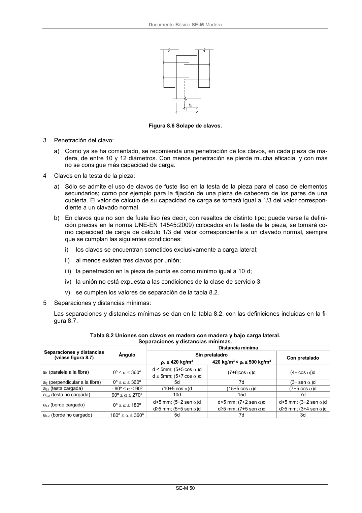

DB-SE-M Madera · edición 2019-12-20 · capa oficial
Documento DB-SE-M-oficial · SHA-256 del PDF 26b5819839ebfda78b0b119c5e76a0a37773b0d763c05688541870075df93718
Página física 56 de 132.
Copia fiel del PDF fuente · Fuente oficial
Ficha de la disposición en la fuente oficial
Formato: Texto de la página (Markdown)
Documento Básico SE-M Madera SE-M 50 Figura 8.6 Solape de clavos. 3 Penetración del clavo: a) Como ya se ha comentado, se recomienda una penetración de los clavos, en cada pieza de ma- dera, de entre 10 y 12 diámetros. Con menos penetración se pierde mucha eficacia, y con más no se consigue más capacidad de carga. 4 Clavos en la testa de la pieza: a) Sólo se admite el uso de clavos de fuste liso en la testa de la pieza para el caso de elementos secundarios; como por ejemplo para la fijación de una pieza de cabecero de los pares de una cubierta. El valor de cálculo de su capacidad de carga se tomará igual a 1/3 del valor correspon- diente a un clavado normal. b) En clavos que no son de fuste liso (es decir, con resaltos de distinto tipo; puede verse la defini- ción precisa en la norma UNE-EN 14545:2009) colocados en la testa de la pieza, se tomará co- mo capacidad de carga de cálculo 1/3 del valor correspondiente a un clavado normal, siempre que se cumplan las siguientes condiciones: i) los clavos se encuentran sometidos exclusivamente a carga lateral; ii) al menos existen tres clavos por unión; iii) la penetración en la pieza de punta es como mínimo igual a 10·d; iv) la unión no está expuesta a las condiciones de la clase de servicio 3; v) se cumplen los valores de separación de la tabla 8.2. 5 Separaciones y distancias mínimas: Las separaciones y distancias mínimas se dan en la tabla 8.2, con las definiciones incluidas en la fi- gura 8.7. Tabla 8.2 Uniones con clavos en madera con madera y bajo carga lateral. Separaciones y distancias mínimas. Separaciones y distancias (véase figura 8.7) Ángulo Distancia mínima Sin pretaladro Con pretalado k 420 kg/m3 420 kg/m3 < k 500 kg/m3 a1 (paralela a la fibra) 0º 360º d < 5mm; (5+5cos )d (7+8cos )d (4+cos )d d 5mm; (5+7cos )d a2 (perpendicular a la fibra) 0º 360º 5d 7d (3+sen )d a3,t (testa cargada) - 90º 90º (10+5 cos )d (15+5 cos )d (7+5 cos )d a3,c (testa no cargada) 90º 270º 10d 15d 7d a4,t (borde cargado) 0º 180º d<5 mm; (5+2 sen )d d<5 mm; (7+2 sen )d d<5 mm; (3+2 sen )d d≥5 mm; (5+5 sen )d d≥5 mm; (7+5 sen )d d≥5 mm; (3+4 sen )d a4,c (borde no cargado) 180º 360º 5d 7d 3d

Datos candidatos: compruebe celdas y notas en el PDF.